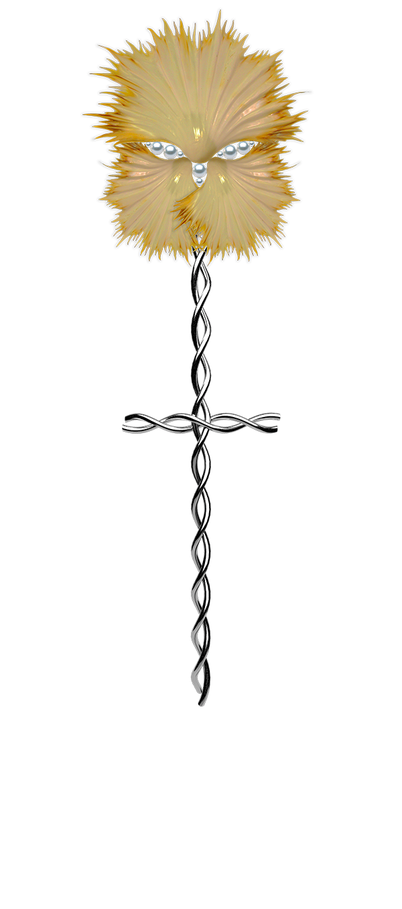

Digital garden is an interpretation of the garden as a website, with the goal to create an experience of nature with synthetic materials in a digital space. Objects are added by time when new ideas come. Different scroll speeds creates an illusion of depth. Water created with manipulated free stock photos and music changing depending on the position of the visitor. Created by Johanna Lundberg with music by Lithe & Free